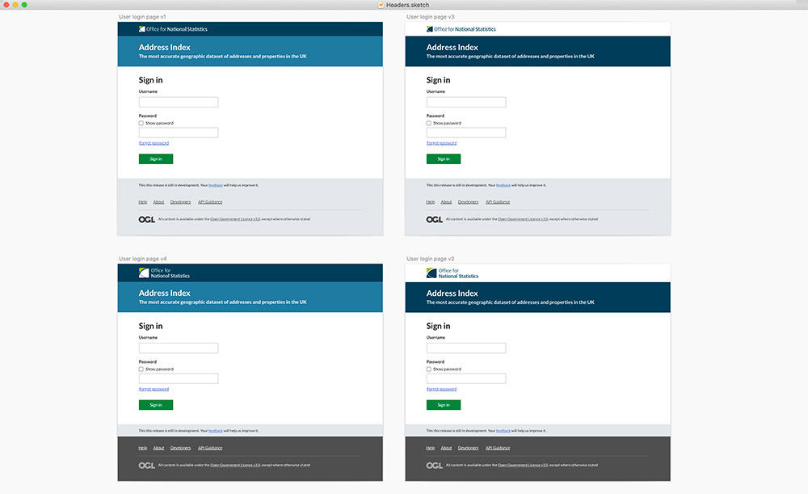
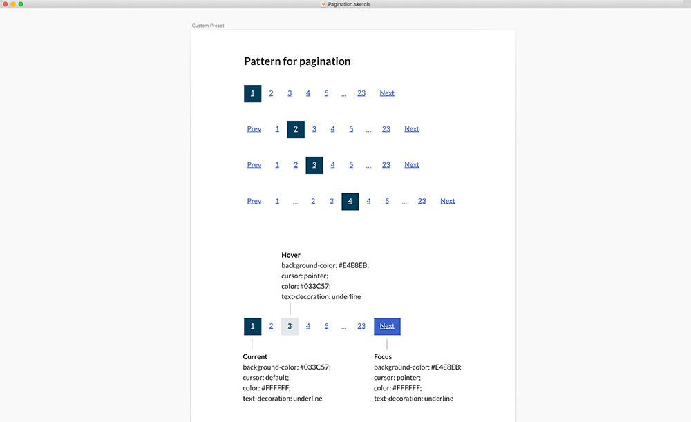
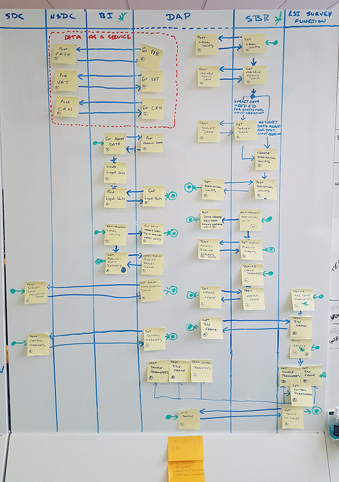
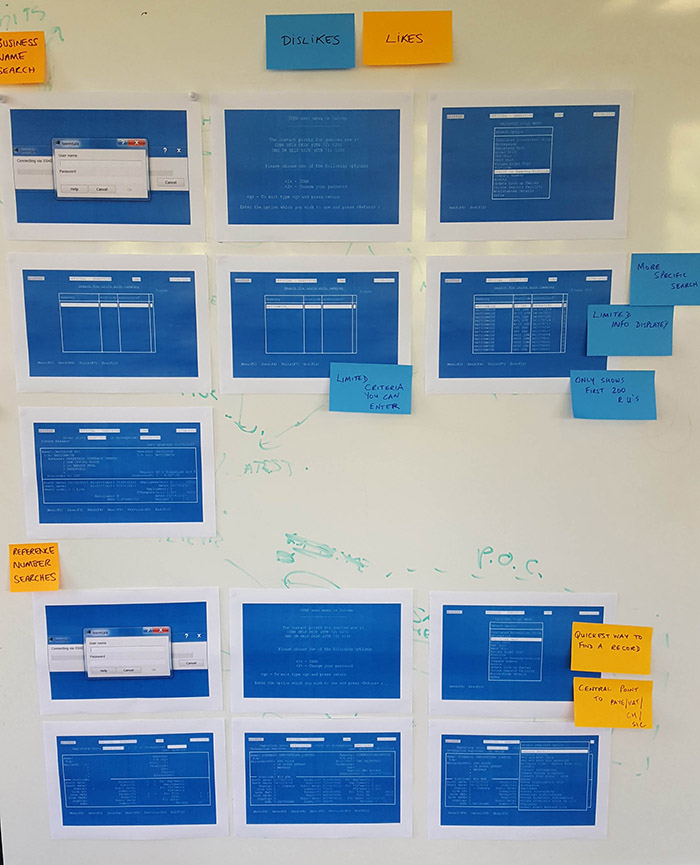
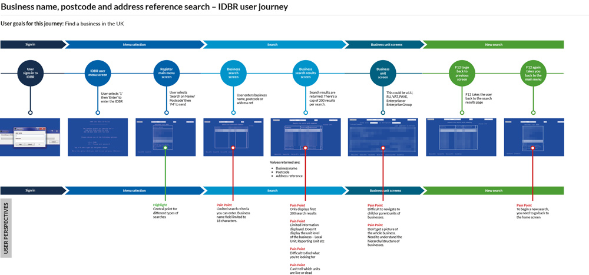
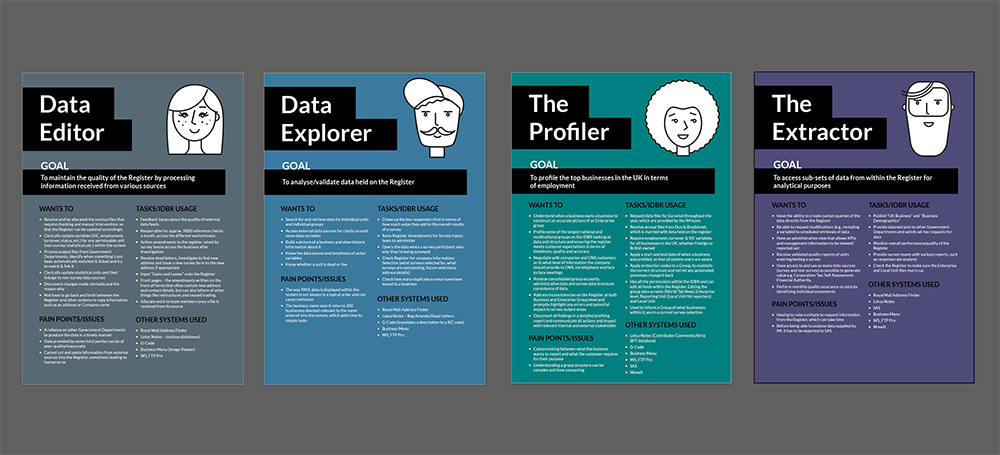
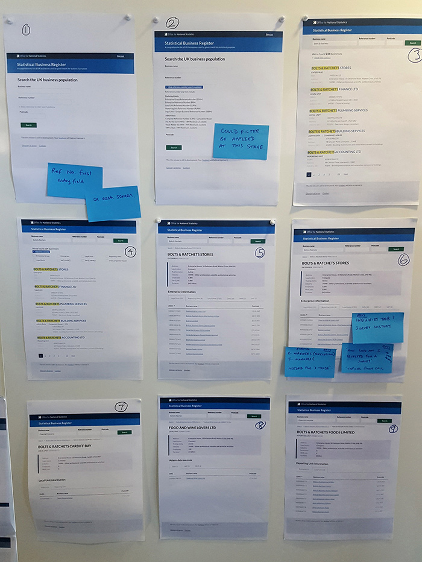
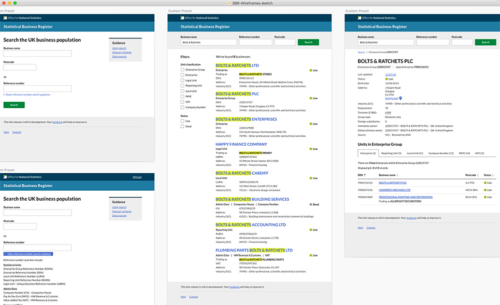

Office for National Statistics
Case studies and work examples from my role as a Senior Interaction Designer (UX) Digital at ONS.
Key projects
Page contents
Background and responsibilities
I worked within agile, multi-disciplined teams to design user focussed software for projects such as the ONS Business Register, 2021 Census and Electronic Data Collection digital transformation.
I was responsible for translating and driving through findings from user research and testing into design concepts and interactive prototypes. I worked closely with development teams to ensure design was implemented correctly and met web accessibility standards.
I was part of the wider design community within ONS, partnering with colleagues to facilitate a consistent user experience across services and contributed to the development of a design system and style guide.
ONS Design System
https://ons-design-system.netlify.app/
I was part of a wider team of designers and front end developers who contributed to the creation of the ONS design system.
I was integral in the development of the templates, setting typographic scales and developing the form components. Each designer was responsible for testing spcific components and patterns within the services they were working on which contributed to the development of the design system from a users perspective.
I took part in monthly workshops run by the internal design team during the development process.
A superbly rewarding workshop with the team today working on making our UX patterns consistent and refined. Thanks to all that came along. @leahvardon @RhodGriffith @mr_nicething and @nicprice you are all awesome 👏🏻 pic.twitter.com/DjLm5k5a2x
— Ben Armstrong (@wiredimage) April 19, 2018
Above: design system template development in Sketch
Above: design system component development in Sketch
ONS Business Register
The ONS Business Register was an internal legacy uplift project within ONS to replace the current Inter-Departmental Business Register (IDBR). The register is a comprehensive list of UK businesses used by government for statistical purposes. It provides the main sampling frame for surveys of businesses carried out by ONS and other government departments. It is also an important data source for analyses of business activities.
The two main sources of input are VAT and PAYE records from HMRC. Additional information comes from Companies House, Dun and Bradstreet and ONS business surveys. The register covers around 2.7 million businesses in all sectors of the economy.
Project discovery
During the discovery phase of the project, there were key questions we needed to answer.
- Which other internal business services would the register interact with?
- Who were the current users of the business register and what did they do?
- How could we improve the register for our current users?
To answer the above, I conducted in depth research with internal users and stakeholder. Typical activities included facilitating workshops, surveys, interviews, user persona development, mapping pain points on the current user journey.
Above: workshop to identify key interactions with other internal services
Above: workshop with users to identify what was good/bad about the current business register.
Above: findings were mapped on along the user journey
Above: user personas created
Designing the Business Register
Above: workshops conducted with internal teams
Above: designs were developed and iterated during sprints
HTML prototypes were developed and tested with users in the user testing lab.